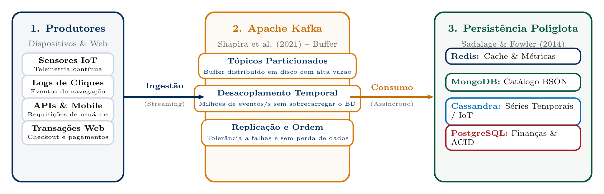
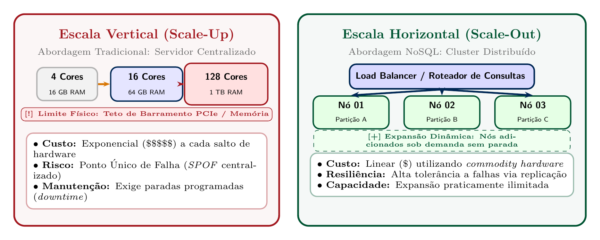
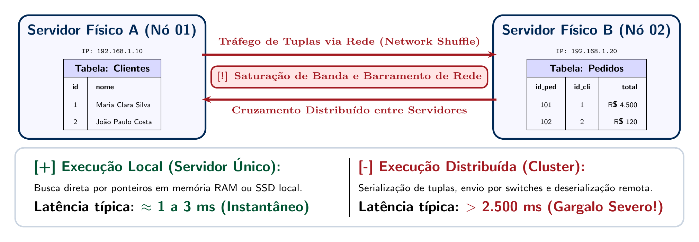
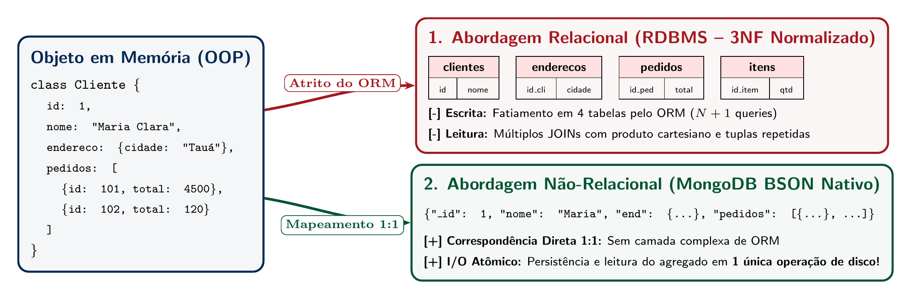
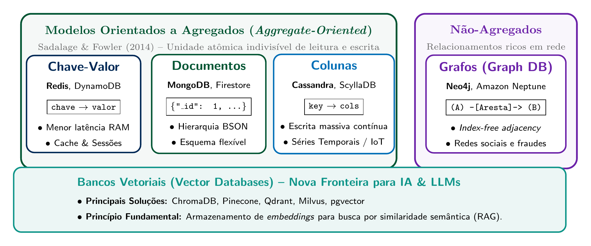

O Paradigma NoSQL, Descasamento de Impedância & Primeiro Banco MongoDB
Disciplina: Banco de Dados Não-Relacionais | Docente: Prof. Me. Reginaldo Pereira Fernandes (IFCE Campus Tauá)
1. O Ponto de Inflexão dos Dados: Da Hegemonia Relacional à Web 2.0
Por mais de três décadas (desde Edgar F. Codd em 1970 na IBM), o modelo relacional e a linguagem SQL reinaram absolutos no desenvolvimento corporativo. O modelo oferecia garantias transacionais rigorosas conhecidas pelo acrônimo ACID (Atomicidade, Consistência, Isolamento e Durabilidade). No entanto, o advento da Web 2.0 (Google, Amazon, redes sociais) impôs uma carga sem precedentes:
- Volume Massivo: De gigabytes locais para petabytes gerados diariamente por bilhões de usuários.
- Velocidade Contínua: Milhões de escritas/leituras simultâneas por segundo ao redor do planeta com SLA sub-segundo.
- Variedade e Evolução Dinâmica: Dados polimórficos, logs não-estruturados, grafos sociais e JSON em constante mutação, onde comandos bloqueantes como
ALTER TABLEinviabilizam operações ininterruptas.
Raízes Históricas (Frozza et al. / Sadalage & Fowler, 2014):
• 1998: Carlos Strozzi utilizou a denominação NoSQL para um banco relacional open-source leve sem interface SQL.
• 2006--2007: Os artigos seminais Google Bigtable (Chang et al., 2006) e Amazon Dynamo (DeCandia et al., 2007) definiram os fundamentos da persistência distribuída sob alta disponibilidade.
• 2009: Johan Oskarsson organizou em San Francisco a conferência que consolidou a comunidade, onde Eric Evans propôs resgatar a sigla com o significado Not Only SQL (Não Apenas SQL).
Streaming & Ingestão Distribuída (Shapira et al., 2021)

Figura 1: O papel do Apache Kafka desacoplando fluxos em tempo real antes de persistir em bancos NoSQL especializados.
2. Limitações Arquiteturais: Scale-Up vs Scale-Out e Network Shuffle
A resposta clássica dos RDBMS para crescer era a Escala Vertical (Scale-Up): comprar servidores maiores, com mais CPUs e mais memória RAM. Essa abordagem possui três graves problemas:
- Custo Exponencial: Máquinas topo de linha custam centenas de vezes mais do que máquinas comuns.
- Teto Físico: Limites físicos de velocidade de barramento e processamento.
- Ponto Único de Falha (SPOF): Se a máquina central falhar, toda a operação da empresa cai.
O NoSQL adota a Escala Horizontal (Scale-Out): clusters elásticos de hardware comum (commodity), onde novos nós distribuem dados e toleram a queda de nós sem perda de disponibilidade.

Figura 2: Contraste de custo e arquitetura entre Scale-Up e Scale-Out.
O Custo dos JOINs Distribuídos e o Network Shuffle
Em uma única máquina, cruzar 4 tabelas com JOIN ocorre através de ponteiros em memória RAM ou disco SSD local (latência ~1 ms).
Porém, em um cluster particionado (sharded), dados de tabelas distintas residem em servidores físicos separados. Realizar uma junção exige o Network Shuffle: trafegar terabytes de tuplas através dos switches de rede, fazendo a latência saltar de milissegundos para dezenas de segundos!

Figura 3: Saturação de banda de rede gerada por JOINs distribuídos.
3. Descasamento de Impedância Objeto-Relacional & Orientação a Agregados
Discutido em profundidade por Sadalage & Fowler (2014) e Frozza et al., o Object-Relational Impedance Mismatch representa a incompatibilidade conceitual entre o modelo de classes/objetos da aplicação e as tabelas relacionais em 3NF.
Para salvar um objeto Cliente com seus pedidos, o ORM precisa fatiá-lo em 4 tabelas relacionais. Para ler, executa múltiplos JOINs. Em contrapartida, em bancos NoSQL orientados a documentos como o MongoDB, o documento BSON coincide 1:1 com o modelo de domínio, permitindo gravação e leitura em um único I/O atômico de disco!

Figura 4: Fatiamento no RDBMS vs afinidade natural em documentos agregados.
Taxonomia NoSQL: Orientados a Agregados vs Não-Agregados

Figura 5: Classificação formal entre bancos orientados a agregados (Chave-Valor, Documentos, Colunas), não-agregados (Grafos, Relacional) e Bancos Vetoriais (IA/RAG).
# Execução do Benchmark Relacional vs NoSQL em demonstracao_aula01.py
# 1. Escrita relacional (4 INSERTs fragmentados com Foreign Keys):
# Tempo médio de gravação relacional: 0.1284 ms
# Necessidade de 3 JOINs para reconstruir o objeto em memória.
# 2. Escrita NoSQL (1 Documento BSON/JSON atômico):
# Tempo de serialização direta: 0.0522 ms
# Leitura em 1 único I/O atômico de disco por chave primária (_id: 1).4. Guia de Instalação do Serviço MongoDB (Ubuntu v8/v9 e Windows)
O MongoDB opera nativamente como um serviço de sistema (daemon mongod) escutando requisições na porta 27017. Veja o passo a passo para configurar o serviço em seu sistema operacional:
# 1. Dependências e Chave GPG Oficial do MongoDB
sudo apt update && sudo apt install -y gnupg curl
curl -fsSL https://www.mongodb.org/static/pgp/server-8.0.asc | sudo gpg -o /usr/share/keyrings/mongodb-server-8.0.gpg --dearmor
# 2. Adicionar o repositório oficial da distribuição
echo "deb [ arch=amd64,arm64 signed-by=/usr/share/keyrings/mongodb-server-8.0.gpg ] https://repo.mongodb.org/apt/ubuntu $(lsb_release -cs)/mongodb-org/8.0 multiverse" | sudo tee /etc/apt/sources.list.d/mongodb-org-8.0.list
# 3. Atualizar e instalar o pacote oficial
sudo apt update && sudo apt install -y mongodb-org
# 4. Comandos de Gerenciamento do Serviço (systemd)
sudo systemctl start mongod # Inicia o serviço
sudo systemctl status mongod # Confere se está active (running)
sudo systemctl enable mongod # Habilita no boot
mongosh # Abre o shell interativo
# 1. Baixar o instalador oficial .msi em mongodb.com/try/download/community
# 2. Executar assistente -> Escolher "Complete" -> MARCAR "Install MongoDB as a Service"
# 3. Gerenciamento do Serviço via PowerShell (Como Administrador):
Get-Service MongoDB # Verifica se está Running
Start-Service MongoDB # Inicia o serviço
Stop-Service MongoDB # Interrompe o serviço
# 4. Via Prompt de Comando (CMD Admin):
net start MongoDB && net stop MongoDB
# 5. Adicionar a pasta 'bin' ao PATH e testar no terminal:
mongosh
docker run -d --name mongodb -p 27017:27017 -v mongo_data:/data/db mongo:latest e conecte com docker exec -it mongodb mongosh.
5. Executando um Banco no MongoDB: Prática Hands-On (`mongosh`)
Com o serviço rodando, abra o terminal e digite mongosh. Execute a sequência abaixo para criar o banco de dados da aula, inserir o documento agregado, consultar por campo aninhado e aplicar atualizações atômicas:
// 1. Selecionar ou criar o banco de dados da disciplina
use ads_comercio;
// 2. Inserir documento de cliente agregado (com endereço e pedidos embutidos)
db.clientes.insertOne({
_id: 1,
nome: "Maria Clara Silva",
email: "maria.clara@aluno.ifce.edu.br",
endereco: { cidade: "Tauá", uf: "CE" },
pedidos: [
{
id_pedido: "PED-2026-001",
data_emissao: "2026-09-29",
itens: [
{ produto: "Notebook Dell", quantidade: 1, preco_unitario: 4500.00 },
{ produto: "Mouse Sem Fio", quantidade: 2, preco_unitario: 85.50 }
],
total: 4671.00
}
]
});
// 3. Consulta com Dot Notation (busca diretamente no subdocumento sem JOIN)
db.clientes.find({ "endereco.cidade": "Tauá" }).pretty();
// 4. Atualização Atômica ($push): Adicionar item diretamente no array de pedidos
db.clientes.updateOne(
{ _id: 1 },
{ $push: { "pedidos.0.itens": { produto: "Teclado Mecânico", quantidade: 1, preco_unitario: 250.00 } } }
);
// 5. Verificar a contagem de documentos na coleção
db.clientes.countDocuments();